我们会用爱取胜，而不是枪，纳粹会消失，因为恶魔将他自己吞噬，但是如果爱没有胜出，纳粹会以其他的名义回来。
——《教皇保罗二世前传》
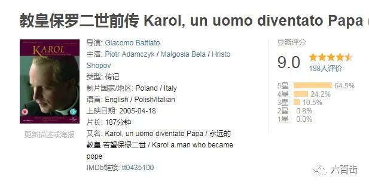
在写上一篇《十个破土而出的希望》时，我再一次被这部电影震撼。
尤其是最近发生那么多令人绝望的事，这部电影所折射出来的智慧和生命显得更加珍贵。
所以，我把这篇文章再发出来，为了让它活的久一些，我不得不阉割一部分内容，更多需要大家自己去看。
此片讲述了波兰籍教皇保禄二世的一生，他经历了二战、纳粹、毒菜、世俗化、暗杀的逼迫，但依旧对信仰心存盼望，并活出了基督的爱。
而本片没有说教意味，也不晦涩难懂，有极强的观赏性，更增强了电影的魅力。
故事有一种神奇的魔力，它能够让我们的想象展开翅膀，经历和体悟我们未曾看见的真实。
借着叙事，我们可以和主人公一同面对纳粹的子弹和白色恐怖，可以帮助我们在思想和想象力上先走一步。
第一篇
纳粹——他们是按照上帝的心意造出来的么?
故事开始于二战中的波兰，波兰受到德国闪电战的攻击，无数波兰人死于纳粹空军的袭击，而苏联与德国达成协议，拒绝帮助波兰，波兰一夜之间成为别人的俘虏。
此时的主人公卡罗尔正值上大学，亲眼目睹了纳粹的罪恶，犹太人、知识分子、教会神职人员大量被迫害，仿佛整个世界在一夜之间交给了恶魔。
1、苦难：上帝在哪里？
波兰人民被纳粹坦克驱赶

聪明可爱的小男孩下一秒就变成了一具冰冷的尸体
犹太女孩的双眼因恐惧而空洞
女孩被纳粹所抓，被抢指着在押送犹太人到集中营的火车站台演奏小提琴
最终还是被纳粹残忍杀害
看着无数生命被恶魔吞灭，所有人不禁发问：
“
为什么这些恐怖之事一次又一次重复，总是变得更糟，
是什么让眼睛、心灵和意志
如此欠缺对怜悯与尊重的感受
他们也称为人类！同样有母亲姐妹和孩子
一样有丈夫或妻子，晚上与他们相拥
而这些受造物是按照上帝的形象造的么，上帝在哪里？
”
2、举起枪还是拿起笔
这个困惑没有答案，但是每个人都采取了行动。
有些学生选择拿起枪，用暴力对抗暴力，卡罗尔的同学壮烈牺牲。
卡罗尔的老师面对纳粹对知识分子的打压，选择用生命换取自由
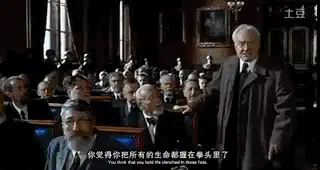
而卡罗尔选择创作和表演话剧来保护波兰的文化，他的梦想是成为一名演员
但是，看着同学和老师被杀，他渐渐绝望了，他的梦想破碎了。
因为如此恐怖的黑暗让他失去了盼望，他觉得世界已经变得聋哑了，保卫文化并不够，他也不愿意拿起枪来反抗暴力。
3、美好的见证——托马斯神父
卡罗尔梦想破灭后，他最好的朋友——一位年轻帅气的神父托马斯影响并改变了他，他和卡罗尔一样，对纳粹有仇恨，对黑暗的世界有困惑。
他所在的教堂被纳粹强占为自己的私人教会
纳粹军官强迫他共进午餐，却出言讥讽、亵渎，在托马斯面前讥讽犹太人是劣等民族，是堕落的民族
面对纳粹对生命的漠视和戏谑，托马斯忍无可忍，悲痛的讲了这段让人心碎的话
“
犹太小孩不是小孩
德国小孩干净
犹太小孩肮脏
德国小孩有牙
犹太小孩无齿
德国小孩睡在床垫上
犹太小孩睡在停放死者的桌边
德国小孩玩耍
贫民窟的犹太孩子不懂怎么玩
他们真的是堕落的小孩
他们唯一的娱乐
是看着他们的父母兄弟姐妹被射杀
他们唯一的乐趣是看着他们的母亲被杀
德国小孩笑
犹太小孩不笑
德国小孩走路
犹太小孩不走路
你们从未教他们怎么走路怎么笑
即便你们试图用皮鞭让他们服从
他们也不会
你不知道犹太小孩没有腿么
他们长翅膀了
”
因此，即使是神父，托马斯对纳粹有着真实的仇恨
托马斯将自己内心的挣扎告诉了卡罗尔，“我曾定睛注视这些纳粹分子，我看到恶魔在他们里面是如此狂妄，难以理喻 、猥亵......，我感觉几乎想要杀了他们。
而我是个神父.我对有此想法感到内疚,我不想像他们那样充满仇恨，爱！唯有爱能阻止人们堕入地狱的深渊”
4、一个纳粹军官的忏悔
托马斯坚信神赋予生命的意义要比生活本身更加重要，他明白历史也会让好人面对极端的选择,他们感觉在走向死亡,因为他们先把自己的灵魂杀死了。
托马斯接受了一个纳粹军官的忏悔。
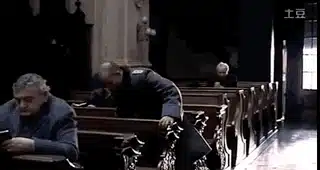
托马斯对于这位纳粹军官的接纳最终也给了军官勇气，这位眼睛清澈无比的军官，选择了良心，拒绝了上级的命令，也放下了自己的生命。
托马斯冒死来到刑场上，给军官带来极大的平安
纳粹将这位军官的死归咎于这位波兰神父，死亡立马临到了托马斯的头上
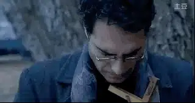
好友托马斯的死亡以及他所展现出来的盼望和饶恕，让卡罗尔震撼不已，卡罗尔要找出让托马斯相信和盼望的源头，卡罗尔决心成为一位神父。
第二篇 毒菜
纳粹战败后，迎接波兰的不是自由，而是苏联老大哥控制下的傀儡政权。
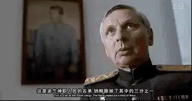
1、白色恐怖
老大哥影响下的政权，手段总是惊人的相似，波兰政府拿着纳粹还没有清理完的神职人员名单继续进行清洗，关闭所有神学院，只在华沙开了一家官办神学院。
控制所有媒体、打着“爱国主义”、“危害人民政权”以及各种“亲资本主义、亲梵蒂冈分子”的旗帜大肆排除异己。
特勤局局长将在纳粹期间帮助过他的主教送进监狱
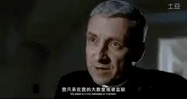
因为未刊登斯大林悼词，杂志被毁
同样，波兰政府也向手无寸铁的游行工人、小孩开枪
2、冷静睿智的卡罗尔
卡罗尔被政府派到一所大学教伦理学。而经历了战争洗礼的卡罗尔，也深深的明白。
这个时代的邪恶存在于人类一系列的退化中，有时是由意识形态决定，有时是经济或者政治制度，必须通过重建人类的神圣价值来反抗，应给在生活中先出我们的爱，一种他们不了解的爱，我们需要为每一个生命的神圣尊严做见证。
卡罗尔在这段时间里都在宣扬爱、祈祷、盼望，而不是去激怒政权，这让政府人员对卡罗尔放松了警惕，觉得他对于政府的舆论控制并没有什么威胁。
但是特勤局局长显然并不打算这么轻易的放过卡罗尔，他安排了一个美术生亚当去监视卡罗尔的一言一行，想要找到卡罗尔的把柄。
甚至，亚当偷偷地在教堂告诫室安装了窃听器
卡罗尔一直用爱心服侍他的学生和教会里的人，他的博学多才以及冷静睿智的思想更是赢得了身边人的信任，他教导年轻人要正确理解爱情。
“当一男一女因真爱结合在一起
一人就接手了另一人的命运和未来
就当成他自己的
那可能意味着更多的付出与苦难
但这是爱一个人的唯一的严肃的方式
而不是仅仅游戏而已”
亚当监听了卡罗尔所有的言论，但却听了成千上万次的忏悔和卡罗尔对他们的鼓励。
卡罗尔的话就像水滴一样最终击穿了亚当这块磐石，那些原本让亚当觉得恶心的所谓的“爱”的言语抓住了亚当的心，亚当悔改了。
4、成为影响世界的教宗
未被政府找到任何把柄的卡罗尔，最终被选举为克拉科夫的大主教，用他那睿智的演讲影响了无数人。
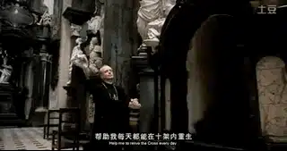
支持捍卫人权
“
我们会继续要求我们的权利
宗教自由是对人类尊严的最高表达
对它进行镇压是一种犯罪
”
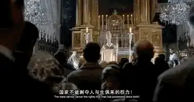
他的演讲总能够击中人性神圣的需要
“人是奇特的存在
他活在物质世界
但却有着深刻的精神需求”
“
信仰不应给从上帝存在的证据开始寻找，
而是要对人类心灵深处彻底的孤独进行回应和反思
”
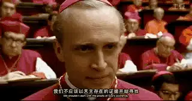
勇敢承认教会的过失，为教会在二战中的沉默请求宽恕
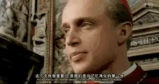
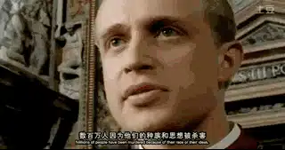
影响巨大的卡罗尔最终在58岁时被选举成为第一位波兰籍教宗。
这部电影带给我很真实的震撼——信仰不是慰藉，信仰赋予生、死以意义。
面对邪恶，我们需要相信信念是在黑暗中发现的，神的秘密和爱也藏在我们的心底，我们需要忍耐，需要诚实。
面对不公平我们可以显示我们的痛苦和失望，喊出我们对条例的拒绝，但更要显明基督的爱在我们身上的彰显，显明我们对于生活的尊重，显明我们对十字架的盼望。
正如面对纳粹时期无数无辜者的牺牲时，卡罗尔痛苦的问托马斯：“界限在哪里？划分那些付出太多的人和付出太少的人的界限在哪里，我在哪里”，托马斯坚定的告诉他“你站在那些不得不心存盼望的人的一边”
关注并回复：教皇保罗二世
获取电影资源
相关推荐：
击垮纳粹独裁的六份传单
《乡愁》 | 没有一个人能够将信仰拍的如此诗意和凝重
100双绝望的眼睛
奥斯卡影帝，你把自己演死了
六百击 | 为了梦想，也为了尿不湿
这里没有挑逗你眼目情欲的小鲜肉
也没有挑动你肉体情欲的段子
更没有膨胀你今生骄傲的鸡血
我们只在乎那些最质朴真诚的作品
在那里我们才能恢复真正的想象力
我们也坚信这才是我们真正需要的

ID:Six_hundred_hits
长按二维码，一键关注
【六百击】
-END-
电影评论
尽情分享朋友圈

苹果打赏
通道
小提示：文末广告是腾讯配送广告，内容与本号无关，但您的每次点击（无需反复点）都会给平台带来几毛收益，欢迎您点击支持六百击。